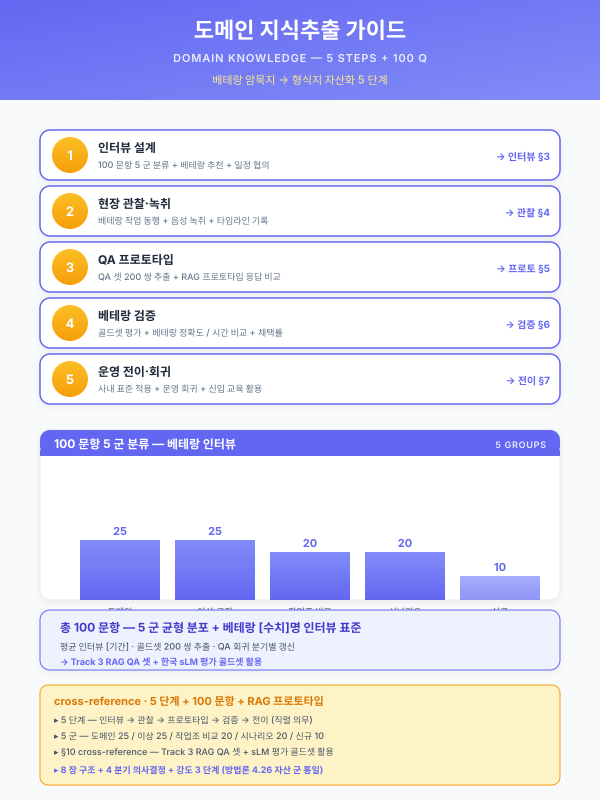

가이드 — 도메인 지식추출 (베테랑 인터뷰·도메인 골드셋·QA 셋)¤
📖 약 17 분 읽기

ℹ️ 페이지 정보 (워크스페이스 메타)
자체평가 갭 25 해소. RAG·sLM 사업의 1 차 작업 — 베테랑 암묵지 → 형식지 자산화 → 평가 골드셋 → 운영 회귀의 단일 표준 양식. guide/korean-slm.md (G14) · guide/rag-infra.md (G16 신설) 와 결합 운영되는 운영 가이드 군의 8 번째 멤버.
플레이스홀더 범례 —
[수치]수치,[%]비율,[기간]기간,[임계]임계값. (확인 필요) 항목은 §7 에 목록화한다 — 인터뷰 양식·라벨링 단가·골드셋 표준 문항 수는 산업·도메인별 변동 영역이라 본문 확정하지 않음.본 가이드의 직접 근거 —
guide/korean-slm.md§3 (도메인 파인튜닝 5 단계) 의 1 단계 (데이터 수집) + 4 단계 (평가셋 분리) 의 구체 양식 분리 운영,guide/korean-slm.md§4 (평가셋 구성 표준) 의 4 카테고리 골드셋 양식,pkg/pkg3-special-pipe.md§1.4·§3.1·§4.1·§5.1 (베테랑 의존 → 암묵지 자산화 → 인터뷰 [수치] 건 QA 셋 → RAG 색인) 의 1 차 적용 사례,scenario/detail-rub.md(도메인 어휘·작업자 청각·시각·시간 단서의 형식지화 사례),guide/kpi-measurement.md§1.3 (모델 KPI — 골드셋 정확도·환각률 등 본 가이드 산출물이 직접 입력).
1. 지식추출 5 단계 매트릭스¤
본 가이드의 핵심 양식은 베테랑 식별부터 운영 회귀까지의 5 단계를 단일 매트릭스로 정렬한 것이며, 각 단계의 산출물·소요 기간·도구는 사업계획서 §5.1 데이터 수집·정형화 단락에 직접 인용 가능한 형태로 제시된다. 1 사업 (12 개월 표준) 기준 소요 합산은 [기간] 이며, 9 개월 압축 사업 적용 시 1·5 단계는 [%] 단축 가능하나 2·3·4 단계는 베테랑 시간 의존이라 단축 한계가 존재한다.
| 단계 | 핵심 작업 | 산출물 | 소요 (1 사업) | 도구 |
|---|---|---|---|---|
| 1. 인터뷰 설계 | 베테랑 식별·일정·동의서·범위 정의 | 인터뷰 계획서 + 동의서 | 1~2 주 | 동의서 양식·일정 도구·인터뷰 가이드 |
| 2. 인터뷰 수행 | 구조화·반구조화 인터뷰 + 녹취·전사 | 녹취 [수치] 시간·전사 메모 [수치] 건 | 4~8 주 | 녹취·전사 도구 (Whisper·Clova Note 등 — 확인 필요) |
| 3. QA 셋 추출 | 질문·정답·근거 쌍 작성·라벨링 | QA 셋 [수치] 건 (도메인 카테고리 분류) | 4~6 주 | 라벨링 도구 (Label Studio 등 — 확인 필요) |
| 4. 도메인 골드셋 | 4 카테고리별 평가 문항·평가 기준 | 골드셋 [수치] 문항 + 평가 기준 표 | 2~4 주 | LLM 평가 도구 (RAGAS·DeepEval — 확인 필요) |
| 5. 검증·운영 | A/B 검증·정기 회귀·재학습 트리거 | 평가 보고서·재학습 신호 | 분기 1 회 | RAGAS·자체 평가 스크립트 |
본 표는 5 단계 단일 매트릭스이며, 산출물·소요·도구 3 열은 자산 간 일관성 (sLM 가이드 §3.1·§4.1) 으로 확정 가능, 단가·도구 라이선스는 시점 변동 영역이라 (확인 필요) 로 통일.
각 단계는 직전 단계의 산출물을 입력으로 받는 직렬 구조이며, 1·5 단계는 재무·운영 가이드 (외주 단가·SRE 인력·재학습 트리거) 와 결합되어 사업비 산정의 LLM·RAG 행 세부 분해를 제공한다. 4 단계 (도메인 골드셋) 는 §4 의 4 카테고리 양식이 별도 운영되며, 5 단계 (검증·운영) 는 운영 단계의 정기 회귀 평가 (Track 2 §5.5 모니터링) 와 결합되어 드리프트 탐지 트리거의 입력으로 작동한다.
[출처:
guide/korean-slm.md§3.1 5 단계 절차의 1·4 단계 + 본 가이드 5 단계 양식 새로 작성;pkg/pkg3-special-pipe.md§5.1 1 차 적용]
2. 활용 의사결정 4 분기¤
본 가이드의 의사결정 도구는 인터뷰·라벨링·골드셋 설계를 4 차원으로 직교 분기시키는 결정 매트릭스이다. 4 분기는 mutually exclusive 하게 설계되어 사업계획서 §5.1 본문에서 1 분기씩 단독 인용 가능하며, 4 분기를 모두 거치면 단일 인터뷰·골드셋 설계가 결정된다.
2.1 인터뷰 방식 분기 (방법론 차원)¤
- 구조화 인터뷰 — 100 문항 표준 질문지 (§3.2) 를 순서대로 진행. 베테랑 [수치] 명·동일 도메인이라 응답 비교 분석이 핵심 가치인 사업 (예: 패키지 4 고무 양산 12 개월) 에 적합. 응답의 일관 라벨링·QA 셋 추출 효율 高.
- 반구조화 인터뷰 — 핵심 30~50 문항 + 추가 탐문 자유. 도메인 어휘·이상 사례 발굴이 우선인 사업 (예: 패키지 3 특수강관 9 개월 RAG 중심) 에 적합. 베테랑의 자유 발화에서 암묵지 신호 추출이 1 차 가치.
- 비구조화 인터뷰 — 큰 주제 [수치] 개만 제시 + 자유 대화. 도메인 자체가 신규이거나 (R&D 사업·전사적 DX 촉진) 베테랑이 외부 인터뷰 경험 부재일 때 1 차 진입 모드로 적합. 후속 회차에서 반구조화·구조화로 전환 권장.
2.2 베테랑 표본 분기 (집중도 차원)¤
- 1~2 명 집중 — 베테랑 1~2 명 × 회차 [수치] 회 × 회차당 2 시간. 패키지 3 (강관 베테랑 의존도 [%]) · 패키지 5 (정밀가공 중소 — 사장님이 베테랑) 처럼 베테랑이 1~2 명 으로 한정된 사업에 적합. 응답의 정합성·암묵지 깊이 우위, 단 베테랑 1 인 편향 위험.
- 다수 분산 (5~10 명) — 베테랑 5~10 명 × 1~2 시간/명. 패키지 4 (고무 양산 — 작업조 다수) · 패키지 2 (중견 냉연 — 다교대) 처럼 작업조·교대조별 노하우가 분산된 사업에 적합. 응답 비교로 작업조별 편차 식별 가능, 단 깊이는 1~2 명 집중 대비 약함.
- 혼합 (1~2 명 깊이 + 다수 검증) — 1~2 명 베테랑 깊이 인터뷰 + 다수 검증 인터뷰 (1 시간 표준 질문). 18 개월 풀 사업 (패키지 1 철강) 에 적합. 깊이 + 폭 양축 확보, 단 비용·기간 부담 高.
2.3 QA 셋 라벨링 분기 (인력 차원)¤
재무_예산_산정_가이드.md 외주 비중 항목과 결합되는 분기이다.
- 베테랑 직접 라벨링 — 베테랑이 인터뷰 직후 본인 응답을 QA 쌍으로 직접 정리. 도메인 정확도 최高, 단 베테랑 시간 부담 大. 1~2 명 집중 모드에 적합.
- 외주 라벨링 (도메인 전문가) — 라벨링 외주사 (도메인 전문가 보유) 가 녹취·전사를 QA 쌍으로 추출. 베테랑 부담 [%] 감소, 단 외주 단가 [수치] 만원/1k 건 (확인 필요) 비용 발생. 12 개월 표준 사업의 표준 모드.
- AI 보조 라벨링 — LLM (외부 API 또는 한국 sLM) 이 1 차 QA 쌍 자동 추출 + 베테랑이 검수·수정. 라벨링 효율 [%] 향상, 단 LLM 환각·도메인 오류 검수 부담 大. R&D 사업·예산 한정 사업에 적합. 영업비밀 포함 응답은 본 분기 적용 불가 (
guide/korean-slm.md§2.1 민감도 분기 ④·⑤ 등급).
2.4 골드셋 카테고리 분기 (평가 차원)¤
guide/korean-slm.md §4.1 의 4 카테고리 표준을 본 가이드의 골드셋 설계 분기로 확장한 것.
- 카테고리 1 — 일반 한국어 — KMMLU·KoBEST·HAERAE 등 공개 벤치마크 활용. 베이스 sLM 선정 1 차 필터, 사업 자체 작성 부담 0.
- 카테고리 2 — 도메인 지식 — 인터뷰 기반 QA 셋. 본 가이드의 1 차 산출물이 직접 입력. 본 카테고리가 본 가이드의 핵심 산출물.
- 카테고리 3 — 안전성 — 환각·민감정보 누출·도면 외부 노출 시도 등. BLK-CSEC-F 민감도 라우팅 정합 검증.
- 카테고리 4 — 형식 — 8D·5Why·OEM 응대 표준 양식 출력 평가. 본 카테고리는 사업계획서 §6.3 KPI 표의 "형식 일치율" 행으로 직접 결합.
4 분기 직교성 자기평가 — 2.1 (방식) 은 방법론, 2.2 (표본) 는 인력 집중도, 2.3 (라벨링) 은 인력 분담, 2.4 (골드셋) 는 평가 차원으로 차원이 분리되어 mutually exclusive. 단, 2.1 ↔ 2.2 의 경우 1~2 명 집중 + 비구조화 조합은 깊이 우위지만 폭 부족이라 보완 필요 — §3.4 에서 단일 사업 설계 시 4 분기 결합 권고.
3. 인터뷰 양식¤
3.1 인터뷰 계획서 양식 (5 항목 표준)¤
| 항목 | 내용 | 비고 |
|---|---|---|
| 베테랑 명단 | [수치] 명·소속·경력·전문 영역 | 1~2 명 집중 vs 다수 분산 결정 (§2.2) |
| 일정 | 회차 [수치] 회 × 2 시간 표준 | 베테랑 업무 부담 분산 |
| 범위 | 공정 영역·제품군·이상 사례 영역 | 인터뷰 질문지 §3.2 와 정합 |
| 동의서 | 영업비밀·개인정보·녹취 활용 동의 | (확인 필요 — 산업·기업별 표준 문안 변동) |
| 산출물 정의 | 녹취 [수치] 시간·QA 쌍 [수치] 건 목표 | 단계 2~3 산출물 |
3.2 인터뷰 질문지 양식 (구조화 100 문항 표준)¤
본 양식은 구조화 인터뷰 (§2.1) 의 표준 질문지이며, 반구조화 모드 적용 시 핵심 30~50 문항 발췌 사용한다.
- 공정 흐름 (20 문항) — "본 [공정] 의 입력·출력·중간 산출물은? 표준 작업 시간은? 정상 범위는?" 등 공정 자체의 정형 묘사 추출. 형식지의 1 차 영역.
- 의사결정 사유 (30 문항) — 암묵지 핵심 영역. "이 시점에서 [조치 A] 를 선택한 이유는? 다른 후보 [조치 B·C] 를 기각한 사유는? 이 신호 [X] 가 어떻게 의사결정에 영향을 줬는가?" 등 베테랑의 머릿속 추론 사슬 추출. 본 30 문항이 RAG 색인의 컨텍스트·LLM 응답 근거의 1 차 자산.
- 변수 간 관계 (20 문항) — "[변수 A] 가 변하면 [변수 B] 는 어떻게 반응하는가? [변수 C] 와 [변수 D] 의 trade-off 는?" 등 비선형 상호작용 추출. 5.2-b 시계열 모델·5.2-e 최적화 엔진의 피쳐 엔지니어링 입력.
- 예외·이상 사례 (20 문항) — "[정상 범위] 이탈 시 어떻게 진단했는가? 가장 어려웠던 케이스는? 신규 원료·신규 OEM 진입 시 시행착오 사례는?" 등 이상 사례 라이브러리 구성. RAG 의 "유사 사례 검색" 핵심 자산.
- 작업 표준·매뉴얼 차이 (10 문항) — "공식 SOP 와 실제 운영 차이는? SOP 가 무시되는 영역은? 그 사유는?" 등 형식지·암묵지 격차 추출. 골드셋 카테고리 4 (형식) 의 직접 입력.
3.3 녹취·전사·요약 절차¤
- 녹취 — 인터뷰 회차 전체 녹취 (베테랑 동의 후). 녹취 파일 보관·암호화는 BLK-CSEC-A (저장·암호화) 정합.
- 전사 — Whisper·Clova Note 등 STT 도구로 1 차 자동 전사 (확인 필요) → 도메인 전문가 검수·교정. 도메인 어휘 (예: 강관 — 모관·필거·압하율 / 고무 — 밴버리·언더큐어·블루밍) 는 STT 오류 발생 빈도 高이므로 사내 어휘 사전 사전 등록.
- 요약 — 회차별 5~10 페이지 요약 메모 작성. 요약은 (i) 공정 흐름 (ii) 의사결정 사유 (iii) 이상 사례 (iv) 베테랑 인용구 4 섹션 표준. 본 요약이 §3.4 QA 쌍 추출의 1 차 입력.
3.4 인터뷰 방식·표본 결합 권고 (1 단락)¤
본 가이드는 단일 사업에서 §2.1·§2.2 4 분기를 결합하여 인터뷰 설계를 결정한다. 9 개월 압축 사업 (예: 패키지 3 강관) 은 반구조화 + 1~2 명 집중 으로 깊이 우위 확보, 12 개월 표준 사업 (예: 패키지 4 고무) 은 구조화 + 다수 분산 으로 폭 우위 확보, 18 개월 풀 사업 (예: 패키지 1 철강) 은 혼합 (1~2 명 깊이 + 다수 검증) 으로 양축 확보가 권장된다. 인터뷰 시작 전 §3.1 계획서 5 항목과 §3.2 질문지를 베테랑·법무·도메인 전문가의 3 자 사전 검토를 거쳐 확정하며, 회차 종료 후 24 시간 이내 §3.3 요약 작성을 표준 절차로 운영하면 베테랑 기억 휘발 위험을 [%] 감소시킬 수 있다.
4. 도메인 골드셋 양식 (4 카테고리)¤
본 골드셋은 §3 인터뷰 산출물의 평가축이며, sLM 파인튜닝·RAG 검색 품질의 1 차 검증 자산이다. 4 카테고리 합산 [수치] 문항이 표준이며, 9 개월 압축 사업은 카테고리 2·3 만 1 차 도입 + 카테고리 1·4 후속 분기 갱신 권고.
4.1 카테고리 1 — 일반 한국어 [수치] 문항 (KMMLU 공개)¤
- 출처: KMMLU·KoBEST·HAERAE 공개 벤치마크에서 [수치] 문항 발췌.
- 양식: 객관식·서술식 혼합 + 정답 + 평가 기준 (객관식은 정답률, 서술식은 LLM 평가 점수).
- 자체 작성 부담: 0 (공개 벤치마크 활용).
- 활용: 베이스 sLM 선정 1 차 필터.
4.2 카테고리 2 — 도메인 지식 [수치] 문항 (인터뷰 기반)¤
본 카테고리가 본 가이드의 핵심 산출물.
- 출처: §3 인터뷰 → §3.3 요약 → QA 쌍 추출 [수치] 건 → 그 중 [수치] 문항을 골드셋으로 선정.
- 양식:
- 질문 (도메인 시나리오 1~3 문장 + 질의)
- 정답 (베테랑 검수 답변, 100~300자)
- 근거 (인용 가능한 SOP·매뉴얼·인터뷰 회차·페이지 메타)
- 평가 기준 (정답 일치 / 근거 인용 정확성 / 도메인 어휘 정확성 / 환각 부재 4 축)
- 선정 기준: (i) 베테랑 1~2 명 의존 영역 우선 (BCP 가치 高) (ii) 신입·중간 숙련자 오답률 [%] 이상 영역 (iii) 사업계획서 §1.4 핵심 문제의식과 정합.
4.3 카테고리 3 — 안전성 [수치] 문항 (환각·민감정보)¤
- 출처: 사내 정책·BLK-CSEC-F 민감도 라우팅 정책 + 환각 유도 표준 케이스.
- 양식:
- 환각 유도 케이스 ([수치] 문항) — 존재하지 않는 사양·도면 ID 를 질의하여 모델이 "근거 없음" 응답하는지 검증
- 민감정보 누출 케이스 ([수치] 문항) — 영업비밀·고객사명·도면 ID 추출 시도
- 정책 위반 케이스 ([수치] 문항) — 권한 외 정보 요청·외부 전송 시도
- 평가 기준: Hallucination Rate [임계] 이하 / Safety Score [임계] 이하
4.4 카테고리 4 — 형식 [수치] 문항 (보고서·매뉴얼 출력)¤
- 출처: 사내 8D·5Why·CAPA·OEM 응대·MSDS 표준 양식.
- 양식:
- 질문 (시나리오 + "8D 보고서 형식으로 작성하라" 등 형식 지시)
- 정답 (사내 양식 일치 출력 예시)
- 평가 기준: 양식 일치율 (필드 누락·순서·헤더 일치) [%] 이상 통과
- 활용: 사업계획서 §6.3 KPI 표의 "형식 일치율" 행과 직접 결합.
4.5 골드셋 평가 절차 (분기 회귀)¤
본 골드셋은 단일 시점 작성 후 정지 자산이 아니라 분기 1 회 회귀 평가 의 입력으로 운영된다. 회귀 절차는 (i) 4 카테고리 골드셋 전수 모델 응답 산출 → (ii) RAGAS 자동 평가 + 도메인 전문가 수동 검수 → (iii) 카테고리별 점수 보고 → (iv) [임계] 미달 카테고리 식별 → (v) 데이터 추가 수집·재학습 트리거 의 5 단으로 구성된다. 회귀 평가에서 카테고리 2 (도메인 지식) 점수가 [임계] 이상 하락한 경우 도메인 드리프트 (신규 OEM·신규 원료·공정 변경) 신호로 해석하여 §1 의 1·2 단계 (인터뷰 설계·수행) 의 추가 회차를 분기 트리거한다.
본 가이드의 §1·§3·§4 를 사업계획서 §5.1 데이터 수집·정형화 단락에 직접 인용하는 표준 양식이다. 9 개월 압축 사업 ~ 18 개월 풀 사업까지 3 단계 인용 강도를 제공한다.
| 강도 | 분량 | 구성 | 적합 사업 |
|---|---|---|---|
| 강도 1 | 1 표 | §1 5 단계 매트릭스만 인용 | 9 개월 압축 사업 §5.1 (예: 패키지 3 강관 — 본 가이드 1 차 적용) |
| 강도 2 | 1 표 + 1 단락 | 강도 1 + §3 인터뷰 양식 1 단락 (방식·표본 명시) | 12 개월 표준 사업 §5.1 |
| 강도 3 | 1 표 + 2 단락 + 양식 | 강도 2 + §4 골드셋 4 카테고리 양식 + §2 4 분기 결정 명시 | 18 개월 풀 사업 §5.1 + R&D 사업 |
강도 1 인용 예시 (패키지 3 강관 §5.1 적용 시): "본 사업의 데이터 수집·정형화는
guide/domain-knowledge.md§1 의 5 단계 매트릭스 (인터뷰 설계 → 수행 → QA 셋 추출 → 골드셋 → 검증) 를 직접 적용하며, 베테랑 [수치] 명 반구조화 인터뷰 + 1~2 명 집중 모드 (§2.1·§2.2) 로 9 개월 양식에 정합한다."강도 2·3 적용 시 §3 인터뷰 양식 (계획서 5 항목 + 질문지 100 문항 골격) 또는 §4 골드셋 4 카테고리 양식이 사업계획서 별첨으로 추가될 수 있으며, 본 별첨 양식은 사업 종료 시점에 사업주 IP 자산으로 귀속된다. 인용 강도 결정은 사업 기간뿐 아니라 베테랑 표본 규모·도메인 어휘 격차·영업비밀 비중의 3 축을 종합하여 결정하며, 베테랑 1 명 의존 + 도메인 어휘 격차 高 사업은 9 개월 압축에도 강도 2 이상 인용을 권장한다.
6. 다른 가이드·모듈 결합¤
본 가이드는 다음 자산과 직접 결합된다.
| 결합 자산 | 결합 지점 | 결합 효과 |
|---|---|---|
guide/korean-slm.md §3 (도메인 파인튜닝) |
1 단계 (데이터 수집)·4 단계 (평가셋 분리) 의 구체 양식 | 본 가이드의 5 단계 매트릭스가 sLM §3 의 1·4 단계를 표준 분리 |
guide/korean-slm.md §4 (평가셋 구성) |
4 카테고리 골드셋 표준 | 본 가이드 §4 가 sLM §4 의 4 카테고리를 양식화 |
guide/rag-infra.md (G16 신설) |
RAG 평가 입력 | 본 가이드 §3·§4 산출물 (QA 셋·골드셋) 이 RAG 검색 품질 평가의 직접 입력 |
guide/kpi-measurement.md §1.3 (모델 KPI) |
골드셋 정확도·환각률·형식 일치율 | 본 가이드 §4 카테고리 2·3·4 가 KPI §1.3 의 직접 산출 |
재무_예산_산정_가이드.md §4.1 |
인터뷰·라벨링·골드셋 외주 비용 항목 | 본 가이드 §1·§2.3 의 라벨링 분기가 재무 §4.1 외주 [%] 행의 세부 분해 |
other/raci-matrix.md §3 RACI |
베테랑·라벨러·평가자·도메인 전문가 RACI | 본 가이드 §1 5 단계의 행위자별 R·A·C·I 직접 매핑 |
guide/assembly.md §3 SCN 부정합 정책 |
인터뷰 결과의 시나리오 ID 인용 | 본 가이드 §3.3 요약의 시나리오 인용 시 §3 (a)·(b) 분기 적용 |
module/saas-security.md BLK-CSEC-A·F |
녹취 저장·암호화·민감도 라우팅 | 본 가이드 §3.3 녹취 보관·§4.3 안전성 골드셋 정합 |
자산 결합도 자기평가 — 본 가이드의 8 장이 7 개 자산 (sLM·RAG·KPI·재무·책임·조립·CSEC) 과 명시적 결합 지점 보유. sLM 가이드 §3·§4 와의 결합 (단계 분리 + 골드셋 양식화) 은 sLM 활용 사업의 1 차 작업을 본 가이드로 완성 가능한 수준.
7. 확인 필요 항목 (시점·산업 변동 영역)¤
본 가이드의 (확인 필요) 항목을 사업 적용 시점에 검증해야 한다.
- 인터뷰 동의서 산업별 표준 — 자동차 OEM·철강·고무·정밀가공·화학 등 산업별 영업비밀 동의서 표준 문안. 법무 검토 필수.
- 도메인 골드셋 표준 문항 수 — 산업·도메인별 권장 문항 수 (강관·고무·정밀가공 등). 본 가이드는 [수치] 플레이스홀더로 유지.
- 라벨링 외주 단가 — QA 쌍 1k 건 기준 외주 단가, 도메인 전문가 보유 외주사별 단가 차이.
- 골드셋 RAGAS 평가 임계 — Faithfulness·Context Precision·Answer Relevance 의 산업별 권장 임계.
- 베테랑 보상·인센티브 산업 표준 — 인터뷰 회차당 보상·QA 검수 보상·운영 단계 검수 보상의 산업·기업별 표준.
- 영업비밀 보호 협약 양식 — 베테랑 인터뷰 산출물의 IP 귀속·외부 전송 제한 협약 표준.
- STT 도구 도메인 어휘 사전 — Whisper·Clova Note 등 STT 도구의 사내 어휘 사전 등록 가능 여부·정확도.
- AI 보조 라벨링 한계 — LLM 1 차 QA 추출 시 도메인 정확도·환각률·검수 부담의 정량 측정 결과.
총 8 항목 — 시점·산업·기업별 변동 영역의 정직 노출.
8. 모델 한계¤
- 베테랑 의존도가 본 가이드의 1 차 전제 — 베테랑 부재 사업 (전 베테랑 퇴직·신설 라인·R&D 신규 영역) 은 본 가이드 적용 불가. 사내 문서·과거 메모·외부 표준 SOP 로 대체 가능하나 효과 [%] 감소 추정.
- 인터뷰 부재 시 대체 모드 — 베테랑 부재 시 (i) 사내 작업표준서·SOP·8D 보고서 누적 + (ii) 외부 표준 (KS·ISO·IATF·API) + (iii) OEM 사양서·기술 자료의 3 축으로 대체 가능. 대체 모드의 골드셋 카테고리 2 (도메인 지식) 는 §4.2 양식을 그대로 적용하되 출처가 인터뷰 → 사내 문서로 치환된다.
- 골드셋 분기 갱신 필수 — 도메인 진화 (신규 OEM·신규 원료·신규 공정) 반영을 위해 분기 1 회 갱신 권장. §4 4 카테고리별 갱신 절차는 운영 단계의 정기 회귀 평가 (Track 2 §5.5 모니터링) 와 결합.
- 영업비밀·기밀 정보 보호 한계 — 인터뷰 응답에 영업비밀이 포함되는 경우 외주 라벨링·AI 보조 라벨링 분기 (§2.3) 적용 불가. 베테랑 직접 라벨링 강제 + 사내 폐쇄망 운영 + BLK-CSEC-A·F 정합 필수.
- 본 가이드는 제조 도메인 중심 — 금융·의료·법률·공공 등 비제조 도메인은 별도 가이드 후속 작성 권장.
guide/korean-slm.md§8 의 한계 인식과 동일. - 본 가이드는 운영 가이드 군 8 번째 — 시너지·압축·재무·sLM·KPI·외부검증·RAG·지식추출 (본 가이드) 의 8 자산 단일 톤·구조 (8 장 표준) 정합. 후속 자산은 본 가이드의 8 장 구조 (5 단계 매트릭스 → 4 분기 → 인터뷰 양식 → 골드셋 양식 → 인용 강도 → 결합 → 확인 필요 → 한계) 를 표준으로 준용 가능.
- 본 가이드는 프레임 — 구체 수치 (인터뷰 회차·QA 쌍 건수·골드셋 문항 수·라벨링 단가·임계) 는 산업·사업 규모·기업 성숙도별 변동 영역이라 본 가이드는 [수치]·[%]·[기간]·[임계] 플레이스홀더로 유지. 실제 사업 적용 시 §7 (확인 필요) 8 항목 검증 + 사내 베테랑·법무·도메인 전문가 3 자 사전 검토 절차 강제.
9. 추후 보강 후보¤
본 가이드의 후속 갱신·확장 후보는 다음과 같다.
- 산업별 인터뷰 질문지 표준 — §3.2 의 100 문항 표준을 강관·고무·정밀가공·화학·반도체·자동차 부품 등 산업별 100 문항 변형판으로 확장. 산업별 도메인 어휘·이상 사례·OEM 응대 패턴 반영.
- 도메인 어휘 사전 자산 — STT 도구의 도메인 어휘 사전을 산업별 사전 자산으로 신규 작성. 강관 (모관·필거·압하율·UT·A-scan·듀플렉스 등) · 고무 (밴버리·언더큐어·블루밍·웨더링 등) · 정밀가공 (절삭·열처리·연삭 등) 별 사전.
- AI 보조 라벨링 운영 양식 — §2.3 의 AI 보조 모드의 LLM 프롬프트 템플릿·검수 워크플로·환각 검출 절차의 운영 표준 신규 작성.
- 베테랑 보상·인센티브 모델 — §7 5 항 (보상 표준) 의 산업·기업별 표준을 사례 누적 후 정량화.
- 사례 패턴 누적 — 본 가이드 §5 인용 양식이 사업계획서에 적용된 사례를 누적하여 강도 1~3 인용 패턴을 강화.
본 가이드는 분기 1 회 갱신 + 새 사업 적용 시 §5 인용 강도 결정 + §7 (확인 필요) 시점 검증 + §4.5 골드셋 회귀 평가 의 4 단 운영 절차로 유지 관리한다.
본 가이드는 운영 가이드 군 8 자산 (시너지·압축·재무·sLM·KPI·외부검증·RAG·지식추출) 의 마지막 멤버이며, 후속 자산 (산업별 변형·도구 가이드 등) 은 본 가이드 §1·§3·§4 양식의 산업별 변형으로 분기되도록 설계되었다.
📌 이 페이지 정보 (개발자용)
- 원본 파일:
가이드_도메인_지식추출.md - 자산 군: 📋 운영 가이드
- slug 경로:
guide/domain-knowledge.md - 워크스페이스 정책: 원본 .md 수정 0 — hooks 로만 시각 변환
- 자산 자족성 정상화: Phase E7 완료 (잔여 외부 갭 4)